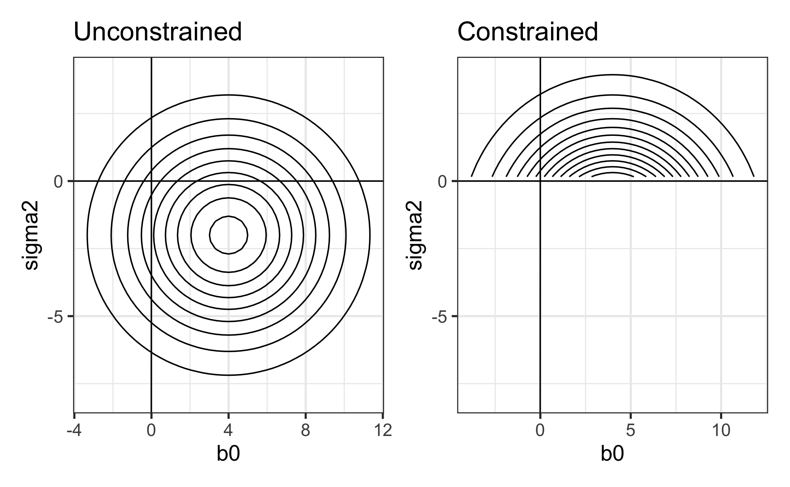

| game | visitor | hometeam | foul.num | foul.home | foul.vis | foul.diff | foul.type | time |
|---|---|---|---|---|---|---|---|---|
| 1 | IA | MN | 1 | 0 | 1 | 0 | Personal | 14.167 |
| 1 | IA | MN | 2 | 1 | 0 | -1 | Personal | 11.433 |
| 1 | IA | MN | 3 | 1 | 0 | 0 | Personal | 10.233 |
| 1 | IA | MN | 4 | 0 | 1 | 1 | Personal | 9.733 |
| 1 | IA | MN | 5 | 0 | 1 | 0 | Shooting | 7.767 |
| 1 | IA | MN | 6 | 0 | 1 | -1 | Shooting | 5.567 |
| 1 | IA | MN | 7 | 1 | 0 | -2 | Shooting | 2.433 |
| 1 | IA | MN | 8 | 1 | 0 | -1 | Offensive | 1.000 |
| 2 | MI | MIST | 1 | 0 | 1 | 0 | Shooting | 18.983 |
| 2 | MI | MIST | 2 | 1 | 0 | -1 | Personal | 17.200 |
Multilevel Generalized Linear Models
Crossed random effects
Prof. Maria Tackett
Apr 10, 2024
Announcements
- HW 05 due today at 11:59pm
- Final project
Round 1 submission (optional) due April 25
Final submission due May 2
Topics
Fit and interpret multilevel GLM
Understand crossed random effects and incorporate them in the multilevel model
Data: College Basketball referees
Today’s data set includes information on 4972 fouls in 340 NCAA basketball games from the Big Ten, ACC, and Big East conferences during the 2009-2010 season. The goal is to determine whether the data from this season support a conclusion from Anderson and Pierce (2009) that referees tend to “even out” foul calls in a game. The variables we’ll focus on are
foul.home: foul was called on home team (1: yes, 0: no)foul.diff: difference in fouls before current foul was called (home - visitor)game: Unique game ID numbervisitor: visiting team abbreviationhome: home team abbreviation
See BMLR: Section 11.3.1 for full codebook.
Data: College basketball referees
Model 1: Composite model
\[\log\Big(\frac{p_{ij}}{1 - p_{ij}}\Big) = \alpha_0 + \beta_0 ~ \text{foul.diff}_{ij} + [u_i + v_i ~ \text{foul.diff}_{ij}]\] \[\left[ \begin{array}{c}
u_i \\ v_i
\end{array} \right] \sim N \left( \left[
\begin{array}{c}
0 \\ 0
\end{array} \right], \left[
\begin{array}{cc}
\sigma_u^{2} & \sigma_{uv} \\
\sigma_{uv} & \sigma_{v}^{2}
\end{array} \right] \right)\]
Model 1 in R
Use the glmer function in the lme4 package to fit multilevel GLMs.
boundary (singular) fit: see help('isSingular')| effect | group | term | estimate | std.error | statistic | p.value |
|---|---|---|---|---|---|---|
| fixed | NA | (Intercept) | -0.157 | 0.046 | -3.382 | 0.001 |
| fixed | NA | foul.diff | -0.285 | 0.038 | -7.440 | 0.000 |
| ran_pars | game | sd__(Intercept) | 0.542 | NA | NA | NA |
| ran_pars | game | cor__(Intercept).foul.diff | -1.000 | NA | NA | NA |
| ran_pars | game | sd__foul.diff | 0.035 | NA | NA | NA |
Boundary constraints
The estimates of the parameters \(\alpha_0, \beta_0, \sigma_u, \sigma_v, \rho_{uv}\) are those that maximize the likelihood of observing the data
The fixed effects, e.g., \(\alpha_0\) and \(\beta_0\), can take any values, but the terms associated with the error terms are constrained to a set of “allowable” values
\[\sigma_u \geq 0 \hspace{10mm} \sigma_v \geq 0 \hspace{10mm} -1 \leq \rho_{uv} \leq 1\]
Because of these boundaries, a “constrained” search is used to find the MLEs.
The warning message
"## boundary (singular) fit", means the estimate of one or more terms was set at the maximum (or minimum) allowable value, not the value it would’ve been if an unconstrained search were allowable
Illustrating boundary constraints
Contour plots from a hypothetical likelihood \(L(\beta_0, \sigma^2)\)

In the unconstrained search, the likelihood \(L(\beta_0, \sigma^2)\) is maximized at \(\hat{\beta}_0 = 4, \hat{\sigma}^2 = -2\)
In reality \(\sigma^2\) must be non-negative, so the search for the MLE is restricted to the region such that \(\sigma^2 \geq 0\).
The constrained likelihood is maximized at \(\hat{\beta}_0 = 4, \hat{\sigma}^2 = 0\)
Model 2: Refit model without \(\rho_{uv}\)
| effect | group | term | estimate | std.error | statistic | p.value |
|---|---|---|---|---|---|---|
| fixed | NA | (Intercept) | -0.187 | 0.044 | -4.213 | 0 |
| fixed | NA | foul.diff | -0.272 | 0.040 | -6.713 | 0 |
| ran_pars | game | sd__(Intercept) | 0.518 | NA | NA | NA |
| ran_pars | game.1 | sd__foul.diff | 0.043 | NA | NA | NA |
Model 2
\[\begin{aligned}\log\Big(\frac{p_{ij}}{1 - p_{ij}}\Big) &= \alpha_0 + \beta_0 ~ \text{foul.diff}_{ij} + [u_i + v_i ~ \text{foul.diff}_{ij}] \\
&u_i \sim N(0, \sigma^2_u) \hspace{10mm} v_i \sim N(0, \sigma^2_v)\end{aligned}\]
\(\hat{\alpha}_0\): The odds of a foul on the home team when the number of fouls is even is expected to be 0.829, \(e^{-0.187}\).
\(\hat{\beta}_0\): When the foul differential increases by 1, the odds of a foul on the home team is expected to decrease by 23.8% (multiply by \(e^{-0.272}\)).
\(\hat{\sigma}_u\): The variance in the log-odds intercepts between games after adjusting for foul differential is \(0.518^2 = 0.268\).
\(\hat{\sigma}_v\): The variance in the effect on the log-odds of foul differential between games is \(0.043^2 = 0.002\).
\(\hat{\rho}_{uv}\): The correlation between the game-to-game variability in the slopes and intercepts (not included in this model)
Crossed random effects
Crossed random effects
The Level Two covariates are the home team and visiting team
There is some evidence in the EDA that there may be differences in the probability of a foul depending on the home team
We will account for this difference by treating home team and visiting team as random effects in the model
- Issue: Home and visiting team are not nested within game, since a single home and visiting team can be in multiple games
The random effects for game, home team, and visiting team are crossed random effects
Notation
\(Y_{i[gh]j}\): Random variable indicating whether the \(j^{th}\) foul in Game \(i\) was called on home team \(h\) instead of visiting team \(g\)
\[Y_{i[gh]j} \sim Bernoulli(p_{i[gh]j})\]
where \(p_{i[gh]j}\) is the true probability a foul in Game \(i\) was called on home team \(h\) instead of visiting team \(g\)
Model 3: Models by level
Level One
\[\log\Big(\frac{p_{i[gh]j}}{1 - p_{i[gh]j}}\Big) = a_i + b_i ~ \text{foul.diff}_{ij}\]
Level Two
\[\begin{aligned}&a_i = \alpha_0 + u_i + v_h + w_g\\ &\beta_i = \beta_0\end{aligned}\]
\[u_i \sim N(0, \sigma^2_u) \hspace{10mm} v_h \sim N(0, \sigma^2_v) \hspace{10mm} w_g \sim N(0, \sigma^2_w)\]
Model 3: Composite model
\[\log\Big(\frac{p_{i[gh]j}}{1 - p_{i[gh]j}}\Big) = \alpha_0 + \beta_0 ~ \text{foul.diff}_{ij} + [u_i + v_h + w_g]\]
\[u_i \sim N(0, \sigma^2_u) \hspace{10mm} v_h \sim N(0, \sigma^2_v) \hspace{10mm} w_g \sim N(0, \sigma^2_w)\]
Why add additional random effects?
Get more precise estimates of fixed effects
Can make comparisons of game-to-game and team-to-team variability
Can get estimated random effects for each team and use them to compare odds of a foul on the home team for different teams
Model 3 in R
| effect | group | term | estimate | std.error | statistic | p.value |
|---|---|---|---|---|---|---|
| fixed | NA | (Intercept) | -0.188 | 0.063 | -2.967 | 0.003 |
| fixed | NA | foul.diff | -0.264 | 0.039 | -6.795 | 0.000 |
| ran_pars | game | sd__(Intercept) | 0.414 | NA | NA | NA |
| ran_pars | hometeam | sd__(Intercept) | 0.261 | NA | NA | NA |
| ran_pars | visitor | sd__(Intercept) | 0.152 | NA | NA | NA |
Model 3 coefficients
| effect | group | term | estimate | std.error | statistic | p.value |
|---|---|---|---|---|---|---|
| fixed | NA | (Intercept) | -0.188 | 0.063 | -2.967 | 0.003 |
| fixed | NA | foul.diff | -0.264 | 0.039 | -6.795 | 0.000 |
| ran_pars | game | sd__(Intercept) | 0.414 | NA | NA | NA |
| ran_pars | hometeam | sd__(Intercept) | 0.261 | NA | NA | NA |
| ran_pars | visitor | sd__(Intercept) | 0.152 | NA | NA | NA |
About what percent of the variability in the intercepts is due to…
- game-to-game differences?
- differences among home teams?
- differences among visiting teams?
Keep the crossed random effects?
Given a large proportion of the variability in the intercepts is explained by game-to-game differences, we can assess if the random effects for home team and visiting team are providing useful information.
To do so, we will compare the following models
What parameters are being tested?
Write the null and alternative hypotheses.
Keep the crossed random effects?
We can use the following methods to assess if it is useful to keep the crossed random effects in the model:
Parametric bootstrap confidence intervals
Compare models with and without the random effects using AIC or BIC
Additional methods to use with caution:
Likelihood ratio test based on \(\chi^2\) (unreliable when testing random effects)
Parametric bootstrap likelihood ratio test (can have very long computational time)
Parametric bootstrap CI
AIC and BIC
Full model
\[\begin{aligned}\log\Big(\frac{p_{i[gh]j}}{1 - p_{i[gh]j}}\Big) &= \alpha_0 + \beta_0 ~ \text{foul.diff}_{ij} + \gamma_0 ~\text{score.diff}_{ij} + \\ &+ \phi_0 ~ \text{time}_{ij} + \kappa_0 ~ \text{offensive}_{ij} + \lambda_0 ~ \text{personal}_{ij} \\ &+ \mu_0 ~ \text{foul.diff}_{ij}\text{:offensive}_{ij} + \nu_0 ~ \text{foul.diff}_{ij}\text{:personal}_{ij} \\ & + \omega_0 ~ \text{foul.diff}_{ij}\text{:time_}_{ij} \\ &+ [u_i + v_h + w_g]\end{aligned}\] \[u_i \sim N(0, \sigma^2_u) \hspace{10mm} v_h \sim N(0, \sigma^2_v) \hspace{10mm} w_g \sim N(0, \sigma^2_w)\]
Full model
| effect | group | term | estimate | std.error | statistic | p.value |
|---|---|---|---|---|---|---|
| fixed | NA | (Intercept) | -0.336 | 0.100 | -3.347 | 0.001 |
| fixed | NA | foul.diff | -0.169 | 0.046 | -3.697 | 0.000 |
| fixed | NA | score.diff | 0.035 | 0.006 | 6.238 | 0.000 |
| fixed | NA | time | 0.005 | 0.006 | 0.854 | 0.393 |
| fixed | NA | offensive | -0.077 | 0.111 | -0.692 | 0.489 |
| fixed | NA | personal | 0.073 | 0.065 | 1.115 | 0.265 |
| fixed | NA | foul.diff:offensive | -0.102 | 0.054 | -1.893 | 0.058 |
| fixed | NA | foul.diff:personal | -0.056 | 0.032 | -1.755 | 0.079 |
| fixed | NA | foul.diff:time | -0.009 | 0.003 | -2.766 | 0.006 |
| ran_pars | game | sd__(Intercept) | 0.425 | NA | NA | NA |
| ran_pars | hometeam | sd__(Intercept) | 0.278 | NA | NA | NA |
| ran_pars | visitor | sd__(Intercept) | 0.208 | NA | NA | NA |
Conclusions from full model
Based on the full model, what are your conclusions about the factors that impact the odds of a foul on the home team?
See Section 11.3.1 of Roback and Legler (2021) or full codebook.
Estimated random effects
Estimated random effects for each team
We will use the full model to get the estimated random effect for each team.
These are empirical Bayes estimates (“shrinkage estimates”).
- Combine individual-specific information with information from all teams
- “Shrinks” the individual estimates toward the group averages
Estimated random effects for each team
We can get these effects using the ranef function in the lmer R package.
reffect_game <- ranef(full_model)$game |> select(`(Intercept)`) |> pull()
reffect_home <- ranef(full_model)$hometeam |> select(`(Intercept)`) |> pull()
reffect_visitor <- ranef(full_model)$visitor |> select(`(Intercept)`) |> pull()
team_names <- rownames(ranef(full_model)$visitor)
reffect_team <- tibble(team = team_names,
reffect_home = reffect_home,
reffect_visitor = reffect_visitor)Distribution of random home team effects
Estimated home random effects by team

Code
var <- attr(ranef(full_model)$hometeam, "postVar")
reffect_predict <- tibble(Intercepts = reffect_home,
SD = 2*sqrt(var[,,1:length(var)]),
team_names = reffect_team$team)
ggplot(data = reffect_predict, aes(fct_reorder(team_names, Intercepts),
Intercepts)) +
geom_point() +
geom_hline(yintercept = 0) +
geom_errorbar(aes(ymin = Intercepts - SD,
ymax = Intercepts + SD),
width=0,color="black") +
labs(title = "Estimated random home team effects",
x = "Home teams",
y = "Estimated random effects") +
theme(axis.text.y = element_text(size = 7)) +
coord_flip()References
Anderson, Kyle J, and David A Pierce. 2009. “Officiating Bias: The Effect of Foul Differential on Foul Calls in NCAA Basketball.” Journal of Sports Sciences 27 (7): 687–94.
Liu, Siwei, Peter Kuppens, and Laura Bringmann. 2021. “On the Use of Empirical Bayes Estimates as Measures of Individual Traits.” Assessment 28 (3): 845–57.
Roback, Paul, and Julie Legler. 2021. Beyond multiple linear regression: applied generalized linear models and multilevel models in R. CRC Press.